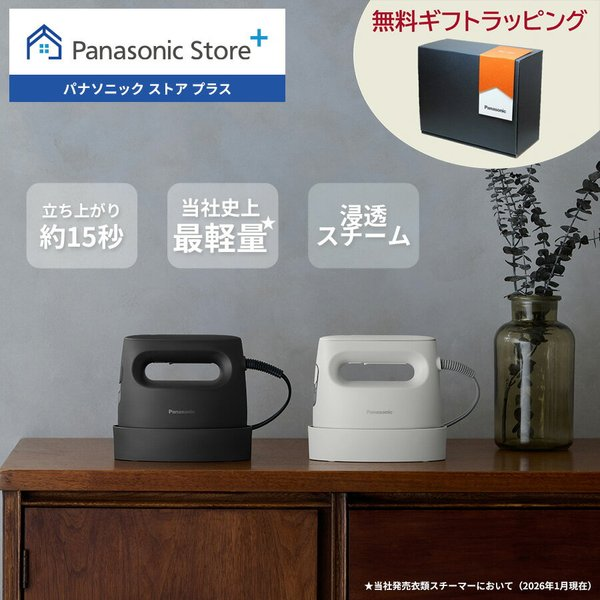
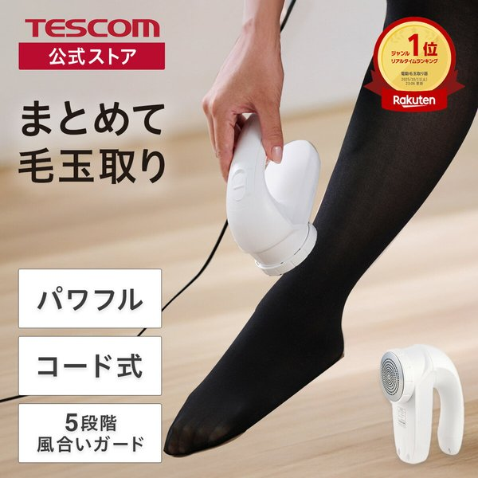
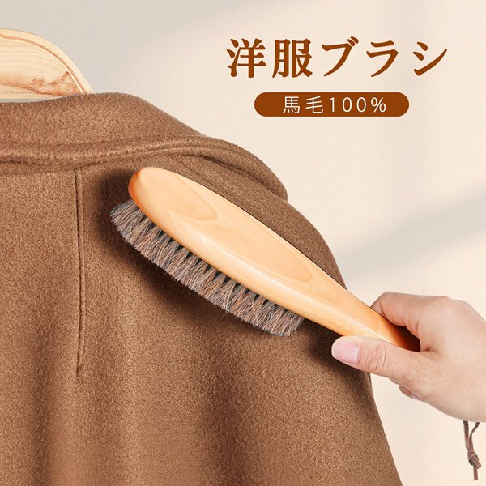
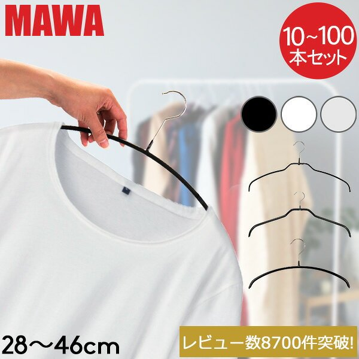
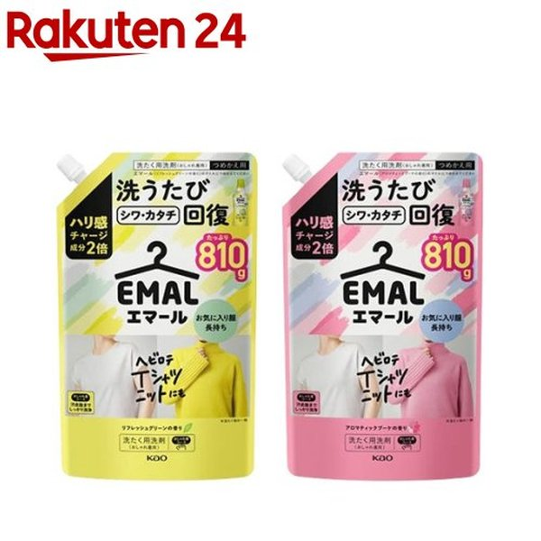
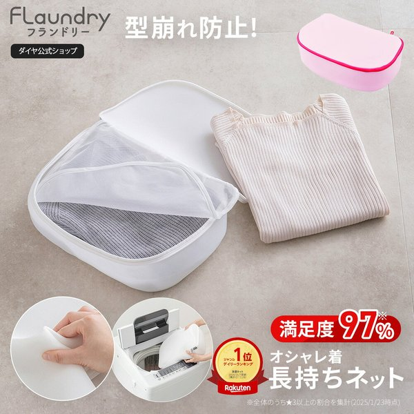
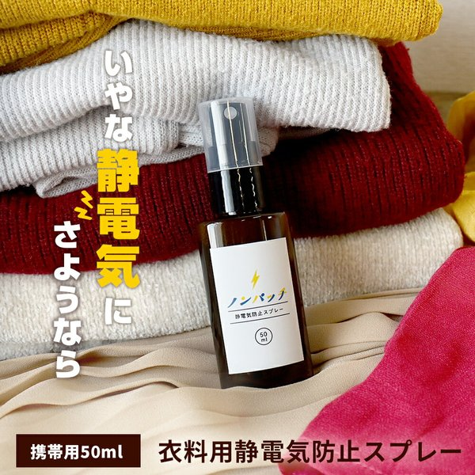
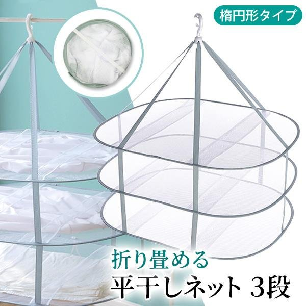
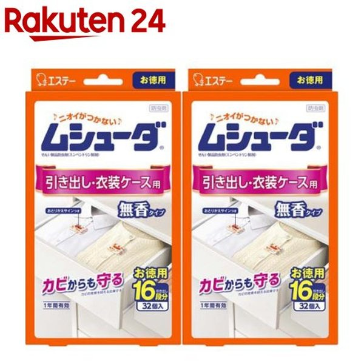

【2026年冬】ニットもコートも新品級に長持ち！衣類スチーマー・電動毛玉取り器＆冬服ケアグッズおすすめ10選
ニットやコートは、洗濯のたびに傷むわけではありません。傷むのは、毛玉を放っておいたとき、吊るして干したとき、そして静電気でホコリを巻き込んだときです。つまり、着る前と着たあとのひと手間で、寿命はかなり変わります。
ケアは3つに分けると揃えやすくなります。まず着る前は、スチーマーでシワとニオイを落とし、ブラシでホコリを払う。次に洗うときは、おしゃれ着用洗剤とネットで型崩れを防ぐ。最後にしまうときは、平干しで乾かし、防虫剤と一緒に保管する。この流れができると、クリーニングに出す回数が減り、結果的に出費も減ります。
本記事では、楽天市場で人気・高評価の衣類スチーマー・電動毛玉取り器＆冬服ケアグッズ10選を、実売価格とレビュー評価つきで写真付き紹介します。
- おすすめ10選 スペック・特徴比較表
- BEST 1｜ティファール 衣類スチーマー ピュアポップ DT2020J0 ほか
- BEST 2｜パナソニック 衣類スチーマー NI-FS70C（130mL・2色）
- BEST 3｜テスコム 毛だまトレタ パワフルタイプ TEC-KD3000（コード式）
- BEST 4｜洋服ブラシ 馬毛100%（カシミヤ・スーツ用）
- BEST 5｜MAWAハンガー 10〜100本セット（28〜46cm）
- BEST 6｜エマール おしゃれ着用洗剤 つめかえ 810g×6セット
- BEST 7｜サボるん おしゃれ着ネットボックス（ニット・セーター用）
- BEST 8｜静電気防止スプレー ノンパッチ 50ml（携帯用）
- BEST 9｜平干しネット 3段 折りたたみ（ニット・セーター用）
- BEST 10｜ムシューダ 防虫剤 引き出し・衣装ケース用 32個入×2箱
- 【読者負担0円】買わなくても得する無料サービス
- まとめ：冬服ケアグッズ10選の選び方
| 順位 | 商品名 | ブランド | 最大の特徴・おすすめ理由 | 総合評価 |
|---|---|---|---|---|
| BEST 1 | ティファール 衣類スチーマー ピュアポップ DT2020J0 ほか | ティファール（T-fal） | ハンガーにかけたまま使える | 4.50 |
| BEST 2 | パナソニック 衣類スチーマー NI-FS70C（130mL・2色） | パナソニック | プレスとスチームの2WAY | 3.92 |
| BEST 3 | テスコム 毛だまトレタ パワフルタイプ TEC-KD3000（コード式） | テスコム（TESCOM） | コード式でパワーが落ちない | 4.64 |
| BEST 4 | 洋服ブラシ 馬毛100%（カシミヤ・スーツ用） | 洋服ブラシ専門店 | 天然馬毛でニットを傷めにくい | 4.40 |
| BEST 5 | MAWAハンガー 10〜100本セット（28〜46cm） | MAWA（マワ） | 滑り止め付きで肩の型崩れを防ぐ | 4.74 |
| BEST 6 | エマール おしゃれ着用洗剤 つめかえ 810g×6セット | 花王 エマール | ウール・カシミヤも洗濯機で洗える | 4.71 |
| BEST 7 | サボるん おしゃれ着ネットボックス（ニット・セーター用） | ダイヤ | 手洗い並みの仕上がりを洗濯機で | 4.55 |
| BEST 8 | 静電気防止スプレー ノンパッチ 50ml（携帯用） | 協和インターナショナル | 50mlの携帯サイズ | 4.47 |
| BEST 9 | 平干しネット 3段 折りたたみ（ニット・セーター用） | 平干しネット専門店 | ニットを吊るさず平らに干せる | 4.23 |
| BEST 10 | ムシューダ 防虫剤 引き出し・衣装ケース用 32個入×2箱 | エステー ムシューダ | 1年間有効で入れ替えが少ない | 4.79 |
ティファール 衣類スチーマー ピュアポップ DT2020J0 ほか

ハンガーにかけたままシワを伸ばせる衣類スチーマー。立ち上がりが速く、連続してスチームが出るので、コートやジャケットのシワも上から当てるだけで目立ちにくくなります。脱臭・除菌にも使えるため、クリーニングに出すほどでもない冬服のリフレッシュに向いています。軽量で、片手で持ったまま動かせます。楽天市場での実売価格は約6,199円（2026年11月時点）。
- ハンガーにかけたまま使える
- 立ち上がりが速く連続スチーム
- レビュー271件・評価4.50
- タンクの水は、使い切ってから次回に補充する
パナソニック 衣類スチーマー NI-FS70C（130mL・2色）

パナソニックの衣類スチーマー。プレスとスチームの両方に使える2WAYで、スーツの上着はかけながら、シャツの襟は台に置いてプレスするといった使い分けができます。静電タッチ式で操作が簡単、自動ヒーターオフも付いています。130mLのタンクで、続けて何枚かかけられます。楽天市場での実売価格は約14,986円（2026年11月時点）。
- プレスとスチームの2WAY
- 静電タッチで操作が簡単
- 自動ヒーターオフ付き
- レビュー53件・評価3.92と、辛口の声も混ざる
テスコム 毛だまトレタ パワフルタイプ TEC-KD3000（コード式）

セーターやニットの毛玉を削り取る電動毛玉取り器。コンセント式なので、バッテリー切れを気にせず、強い回転を保ったまま使えます。6枚刃で、風合いガードは5段階。薄手のニットは浅め、厚手のコートは深めと、生地に合わせて刃の高さを変えられます。刃は取り外して掃除できます。楽天市場での実売価格は約2,779円（2026年11月時点）。
- コード式でパワーが落ちない
- 6枚刃・風合いガード5段階
- レビュー701件・評価4.64
- コンセントの届く場所で使う必要がある
洋服ブラシ 馬毛100%（カシミヤ・スーツ用）

天然馬毛100%の洋服ブラシ。毛先がやわらかいので、カシミヤやウールのニットを傷めずに、表面のホコリや毛玉の原因になる絡み毛を落とせます。着る前に一撫でするだけで、コートやジャケットの印象が変わります。静電気の除去にも効果があり、冬の乾燥した時期に向いています。楽天市場での実売価格は約1,899円（2026年11月時点）。
- 天然馬毛でニットを傷めにくい
- ホコリと絡み毛を落とせる
- レビュー774件・評価4.40
- 水洗いはできないので、乾いた状態で使う
MAWAハンガー 10〜100本セット（28〜46cm）

滑り止め付きのMAWAハンガーをまとめて買えるセット。肩の部分が薄く、ニットやシャツをかけても型崩れしにくいのが特長です。厚みが少ないので、クローゼットの中でかさばらず、同じ幅により多くの服を掛けられます。サイズは28〜46cmから選べ、子ども服からコートまで対応できます。楽天市場での実売価格は約1,299円（2026年11月時点）。
- 滑り止め付きで肩の型崩れを防ぐ
- 薄型でクローゼットが広く使える
- レビュー9,112件・評価4.74
- 並行輸入品のため、時期によって在庫と価格が動く
エマール おしゃれ着用洗剤 つめかえ 810g×6セット

おしゃれ着用の液体洗剤、エマールのつめかえ6本セット。ウールやカシミヤ、シルクなどのデリケートな素材を、洗濯機の手洗いコースで洗えます。すすぎ1回で済むので、型崩れや縮みの原因になる水流にさらす時間を短くできます。6本あると、冬のあいだ洗剤を買い足さずに済みます。楽天市場での実売価格は約4,504円（2026年11月時点）。
- ウール・カシミヤも洗濯機で洗える
- すすぎ1回で傷みを抑える
- レビュー398件・評価4.71
- デリケート素材は乾燥機を使わず、平干しにする
サボるん おしゃれ着ネットボックス（ニット・セーター用）

ニットやセーターを、手洗いしたように洗濯機で洗えるネットボックス。型崩れと毛玉を防ぐメッシュ構造で、ファスナーを閉じるだけで洗濯層に出せます。厚手のセーターでも入る大きさで、洗濯機のドラム式にも対応しています。洗濯のたびに手洗いする手間をなくせるのが利点です。楽天市場での実売価格は約1,399円（2026年11月時点）。
- 手洗い並みの仕上がりを洗濯機で
- 型崩れと毛玉を防ぐ
- レビュー554件・評価4.55
- 厚手のニットを詰め込むと、中で動いてシワになる
静電気防止スプレー ノンパッチ 50ml（携帯用）

衣類に吹きかけて静電気を抑えるスプレー。50mlの携帯サイズで、バッグに入れておけば、外出先でスカートやニットが脚に張り付いたときにすぐ使えます。無香料なので、香水や柔軟剤の香りと混ざりません。花粉やホコリの付着を抑える効果もあり、冬の外出時に1本あると安心です。楽天市場での実売価格は約1,390円（2026年11月時点）。
- 50mlの携帯サイズ
- 無香料で香りが混ざらない
- レビュー110件・評価4.47
- 吹きかける量が多いとシミになるので、離して薄く
平干しネット 3段 折りたたみ（ニット・セーター用）

ニットやセーターを平らに置いて干せる、3段の平干しネット。吊るすと肩が伸びるニットも、平らに置けば型崩れしません。使わないときは折りたたんで、物干しの脇に寄せられます。3段あるので、まとめ洗いした日でも干す場所に困りません。楽天市場での実売価格は約807円（2026年11月時点）。
- ニットを吊るさず平らに干せる
- 3段でまとめて干せる
- レビュー61件・評価4.23
- レビューは61件とまだ少なく、評価は4.23
ムシューダ 防虫剤 引き出し・衣装ケース用 32個入×2箱

衣類の防虫剤、ムシューダの引き出し・衣装ケース用を2箱まとめたセット。1年間有効で、防カビ成分も入っています。無香タイプなので、ニットやコートに香りが移らず、着るたびに虫干しする手間も減らせます。32個入りが2箱あり、衣替えのときに各引き出しへ配れます。楽天市場での実売価格は約1,779円（2026年11月時点）。
- 1年間有効で入れ替えが少ない
- 無香で衣類に香りが移らない
- レビュー155件・評価4.79
- 使用期間中は衣装ケースを密閉し、途中で開け閉めしない
この記事の商品を買う前に、まずは無料で得する選択肢をチェック。どれも登録・利用は0円で、無料期間中に解約すれば料金はかかりません。読みたい雑誌がある人、ポイントを貯めたい人、アンケートなら気軽という人、それぞれに合うものを選べます。
初回31日無料・無料期間中に解約すれば0円 → 楽天ポイントモール｜登録無料で毎日ポイ活
買い物なしでもポイントが貯まる無料サービス → 楽天インサイト｜アンケートに答えてポイント
登録無料・すきま時間のアンケートで貯まる → 楽天カード｜年会費永年無料
新規発行・年会費ずっと0円 →
4つのサービスの違いと使い分けは「出費0円で得する！買わずにポイントが貯まる無料サービス厳選4選」でまとめています。
💡 まとめ：冬服ケアグッズ10選の選び方
冬服を長持ちさせる順番は、毛玉を取る、シワとニオイを落とす、正しく洗う、型崩れさせずに乾かす、虫から守る、の5つです。毛玉取り器とブラシで表面を整え、スチーマーで着る前のひと手間を済ませます。洗濯はおしゃれ着用洗剤とネットで手洗いコースに任せ、乾かすときは吊るさず平らに。しまうときは無香の防虫剤を入れておけば、次の冬も同じ状態で着られます。全部を一度に揃える必要はなく、傷みが気になったところから1つずつ足していくのが続けやすい買い方です。
楽天市場では「5と0のつく日」や「お買い物マラソン」などのキャンペーンに合わせて購入すると、ポイント還元が最大化してお得に手に入ります。ぜひチェックしてみてくださいね。